Introduction to ggtaichi
Youzhi Yu
University of
Chicago
vignettes/ggtaichi.Rmd
ggtaichi.RmdWhy taichi?
A heat map drawn with ggplot2::geom_tile() carries three
dimensions of information: the x position, the
y position, and a single value mapped to fill. That is
plenty when there is one number per cell, but it forces you to
facet (or to draw two separate maps) the moment you want to
compare two data sources on the same footing.
ggtaichi removes that limitation by replacing each cell
with a taichi (yin-yang) diagram. The symbol is a
circle split by an S-curve into two interlocking “fish”:
- the yang (light) fish is shaded by one data source, and
- the yin (dark) fish is shaded by the other.
Because both fish live in the same cell, a single
geom_taichi() layer encodes four
dimensions at once: x, y, yin,
and yang. The two sources keep their own color scales and
legends, so they can be read independently while still being compared
side by side. By default there are no decorative eyes or markers – every
drop of ink on the plot is mapped to data – and when you do switch the
classic eyes on (eyes = TRUE, new in v0.2.0), they can
carry data too, taking a single glyph up to six
dimensions.
Reading a single symbol
It is worth zooming in on one cell to see the anatomy of the glyph. The yang fish (its bulb at the bottom) carries one source; the yin fish (its bulb at the top) carries the other. Each half is filled by its own gradient, so a lighter or darker shade is a smaller or larger value.
one <- data.frame(x = 1, y = 1, google = 7, twitter = 3)
ggplot(one, aes(x, y)) +
geom_taichi(yin = twitter, yang = google) +
coord_fixed() +
theme_taichi()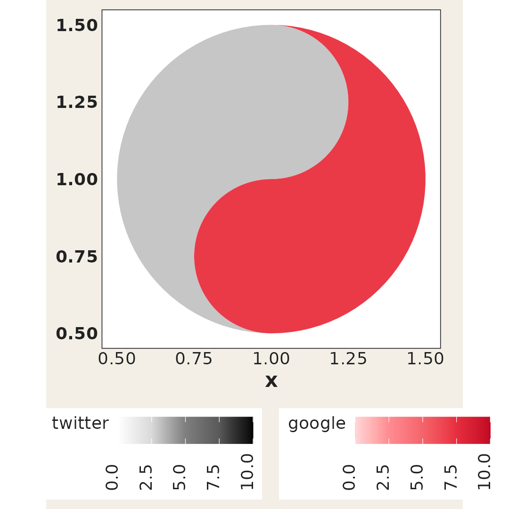
Here the yang (red) fish reads 7 and the yin (grey) fish
reads 3; the deeper the ink, the larger the number relative
to the rest of the data.
The example data
ggtaichi ships with the same data sets used by its
foundational package ggDoubleHeat. pitts_tg
records the 30-week COVID-related Google and Twitter incidence rates for
9 categories in the Pittsburgh Metropolitan Statistical Area (MSA).
head(pitts_tg)
#> # A tibble: 6 × 6
#> msa week week_start category Twitter Google
#> <chr> <int> <date> <chr> <dbl> <dbl>
#> 1 Pittsburgh 1 2020-06-01 Covid 0.965 0.681
#> 2 Pittsburgh 1 2020-06-01 General Virus 0.538 0.0982
#> 3 Pittsburgh 1 2020-06-01 Masks 0.466 0.117
#> 4 Pittsburgh 1 2020-06-01 Sanitizing 0.0561 0.127
#> 5 Pittsburgh 1 2020-06-01 Social Distancing 0.294 0.0386
#> 6 Pittsburgh 1 2020-06-01 Symptoms 0.0457 0.0770states_tg is the larger sibling, repeating the same
measurements across four states, and pitts_emojis holds the
most popular weekly emoji per category. See ?pitts_tg,
?states_tg, and ?pitts_emojis for the full
descriptions.
A first taichi grid
The two value columns are passed to the yin and
yang arguments. Everything else – the
x/y mapping, faceting, titles – is plain
ggplot2. The legend titles default to the column names you
supplied (Twitter and Google here).
ggplot(pitts_tg, aes(x = week, y = category)) +
geom_taichi(yin = Twitter, yang = Google) +
theme_taichi() +
ggtitle("Pittsburgh Google & Twitter Incidence Rate (%)")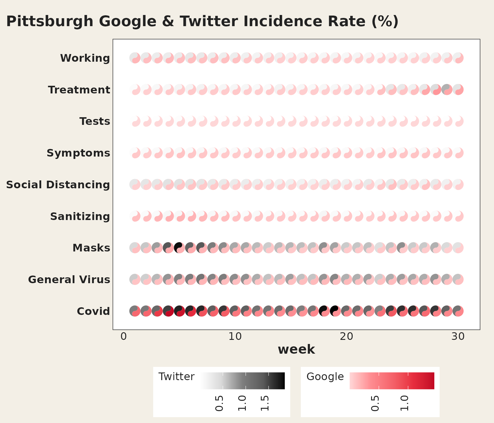
Each symbol stays round regardless of the panel’s aspect ratio, so
you do not need coord_fixed(). The shape
is sized in square units, like the radius of a
grid::circleGrob().
Fewer cells, bigger glyphs
Thirty weeks across nine categories is a lot of ink in one panel. When the goal is to read individual symbols rather than scan an overall texture, subset the data: fewer cells means each taichi is drawn larger.
pitts_small <- subset(pitts_tg, week <= 6)
ggplot(pitts_small, aes(x = week, y = category)) +
geom_taichi(yin = Twitter, yang = Google) +
theme_taichi() +
ggtitle("The first six weeks, drawn large")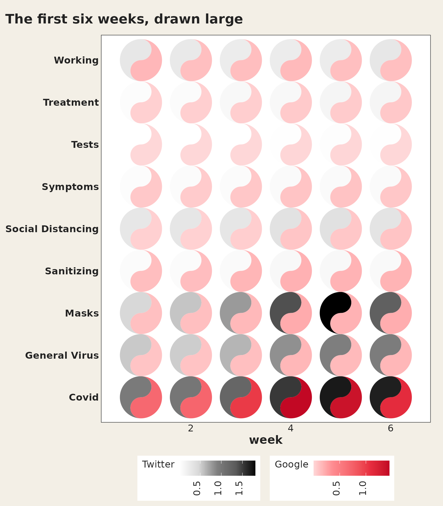
Which source should be yin?
yin defaults to a grey (luminance) ramp and
yang to a red ramp, echoing the “ink and seal” look of a
classic taichi. The choice is yours, but a useful rule of thumb is to
put the source you want to read as intensity on
yin (the eye reads darkness quickly) and the source you
want to read as warmth on yang.
Customizing the color scales
Each fish gets its own gradient. yang_colors and
yin_colors accept any color vector (usually hex codes), and
yang_name / yin_name relabel the legends. Any
extra argument is forwarded to
ggplot2::scale_fill_gradientn(), so you can, for example,
set common limits so both legends share a scale, or pass an
na.value.
ggplot(pitts_small, aes(x = week, y = category)) +
geom_taichi(
yin = Twitter, yin_name = "Twitter (%)",
yin_colors = c("#deebf7", "#3182bd", "#08306b"),
yang = Google, yang_name = "Google (%)",
yang_colors = c("#fee6ce", "#e6550d", "#7f2704")
) +
theme_taichi()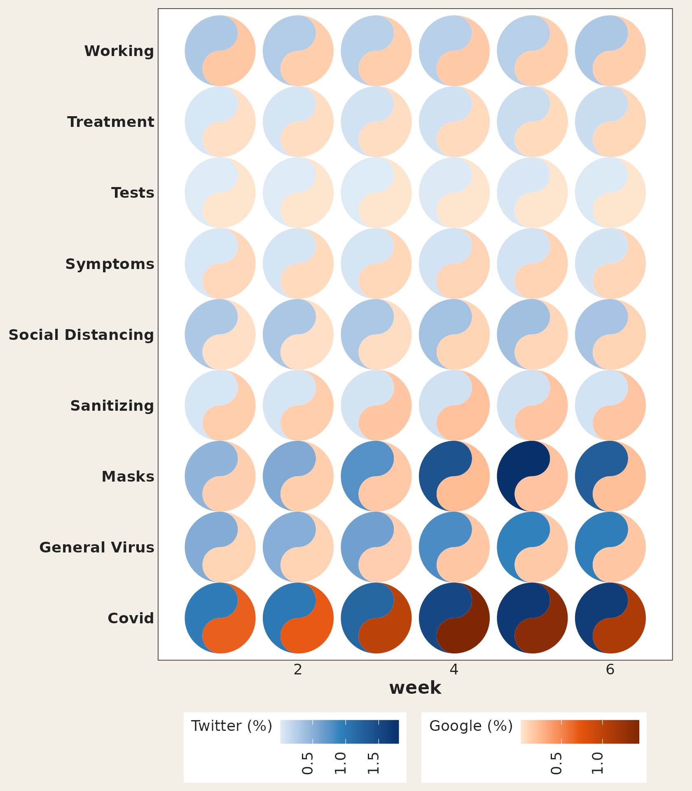
Removing the panel padding
ggplot2 leaves a margin around discrete and continuous
scales, which can make a taichi grid look like it is floating.
remove_padding() trims it; tell it whether each axis is
continuous ("c") or discrete ("d").
ggplot(pitts_small, aes(x = week, y = category)) +
geom_taichi(yin = Twitter, yang = Google) +
remove_padding(x = "c", y = "d") +
theme_taichi()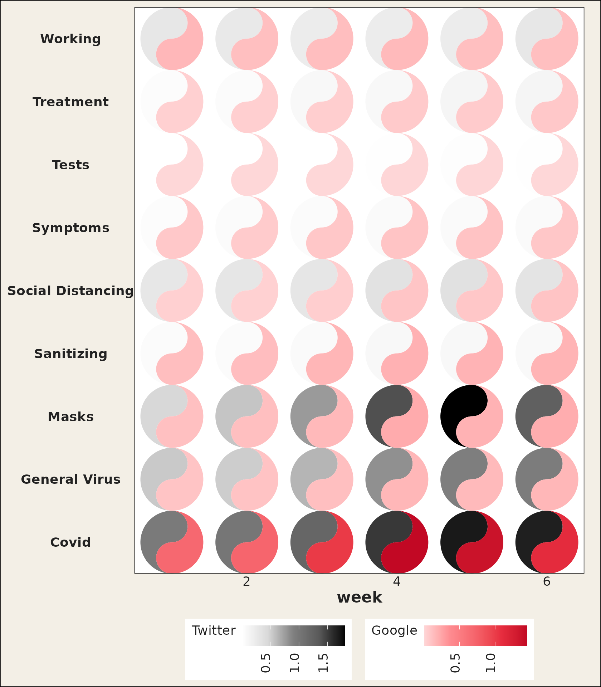
Comparing places with facets
Because geom_taichi() is an ordinary layer, faceting
works out of the box. The states_tg data set carries the
same measurements across four states; pairing two of them over a few
weeks keeps every glyph large and legible.
two_states <- subset(states_tg, state %in% c("New York", "Texas") & week <= 6)
ggplot(two_states, aes(x = week, y = category)) +
geom_taichi(yin = Twitter, yang = Google) +
facet_wrap(~ state, ncol = 1) +
remove_padding(x = "c", y = "d") +
theme_taichi() +
ggtitle("New York vs Texas, weeks 1-6")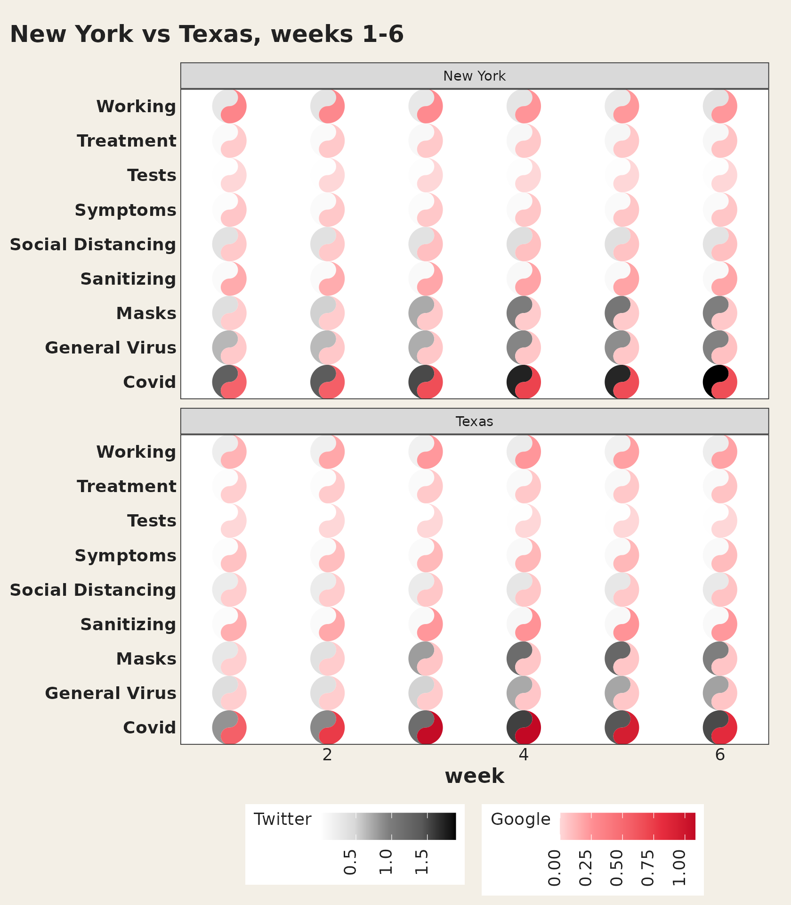
Theming
theme_taichi() is a light, off-white companion theme
that bottoms the legends, drops the panel grid and ticks, and emphasizes
the axis labels. It is a normal ggplot2 theme, so you can
override any element afterwards, or skip it entirely and bring your
own.
ggplot(pitts_small, aes(x = week, y = category)) +
geom_taichi(yin = Twitter, yang = Google) +
theme_taichi() +
theme(plot.background = element_rect(fill = "white")) +
ggtitle("theme_taichi(), then tweaked")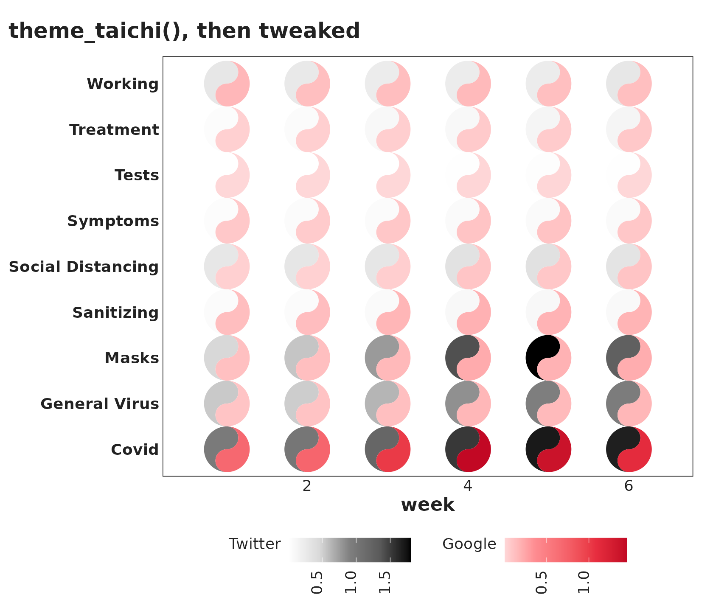
New in v0.2.0
Rotation
The angle argument rotates each glyph by the given
number of degrees. It can be a constant (same angle for every cell) or a
column name (one angle per cell), encoding a directional or temporal
variable as orientation.
one_rot <- data.frame(
x = c(1, 2, 1, 2),
y = c(2, 2, 1, 1),
yin = c(3, 5, 7, 9),
yang = c(9, 7, 5, 3),
rot = c(0, 45, 90, 180)
)
ggplot(one_rot, aes(x, y)) +
geom_taichi(yin = yin, yang = yang, angle = rot,
limits = c(0, 10)) +
coord_fixed() +
theme_taichi()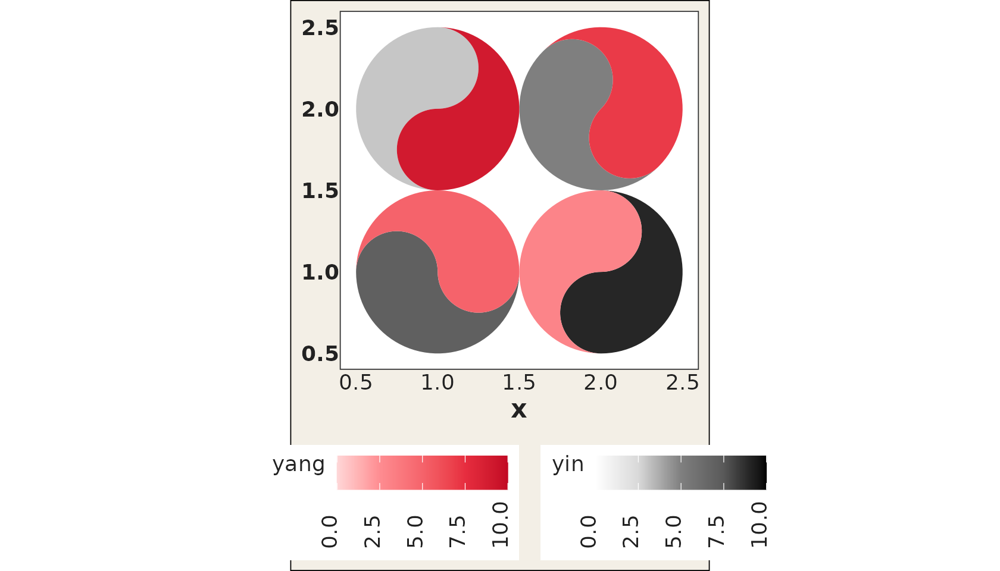
Data-driven eyes
Setting eyes = TRUE draws the classic taichi dots, each
sitting in its own fish’s head: the yin eye in the top bulb, the yang
eye in the bottom one. With the default white and black dots the glyph
looks exactly like the traditional symbol.
one_eye <- data.frame(
x = c(1, 2, 1, 2),
y = c(2, 2, 1, 1),
yin = c(3, 5, 7, 9),
yang = c(9, 7, 5, 3)
)
ggplot(one_eye, aes(x, y)) +
geom_taichi(yin = yin, yang = yang, eyes = TRUE,
limits = c(0, 10)) + # shared limits keep the palest fish visible
coord_fixed() +
theme_taichi()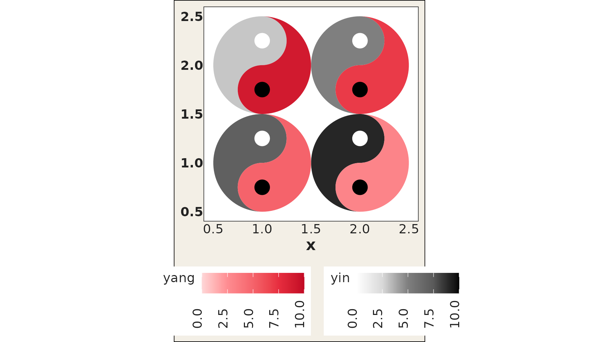
The eyes are not just decoration: yin_eye_size,
yang_eye_size, yin_eye_colour, and
yang_eye_colour all accept either a constant or an
unquoted column name, so the two dots can encode up to two further
variables – a fifth and sixth dimension on top of
x, y, and the two fills. A mapped size column
is rescaled to eye radii between 5% and 30% of the glyph radius (values
already between 0 and 0.5 are used as exact proportions, and an
NA suppresses the eye for that cell).
one_eye$reach <- c(10, 40, 25, 5) # drives the yin eye
one_eye$quality <- c(2, 1, 4, 8) # drives the yang eye
ggplot(one_eye, aes(x, y)) +
geom_taichi(yin = yin, yang = yang,
eyes = TRUE,
yin_eye_size = reach,
yang_eye_size = quality,
limits = c(0, 10)) +
coord_fixed() +
theme_taichi()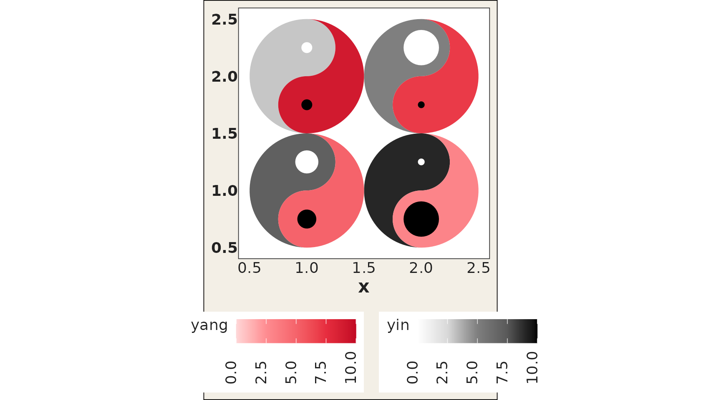
Categorical fills
geom_taichi() now automatically detects whether the
yin / yang columns are numeric or discrete
(factor / character) and picks the appropriate scale. You can also
supply a custom scale constructor via yin_scale /
yang_scale:
disc <- data.frame(
x = c(1, 2, 1, 2),
y = c(2, 2, 1, 1),
method = factor(c("A", "B", "C", "A")),
outcome = factor(c("win", "loss", "win", "loss"))
)
ggplot(disc, aes(x, y)) +
geom_taichi(yin = method, yang = outcome) +
coord_fixed() +
theme_taichi()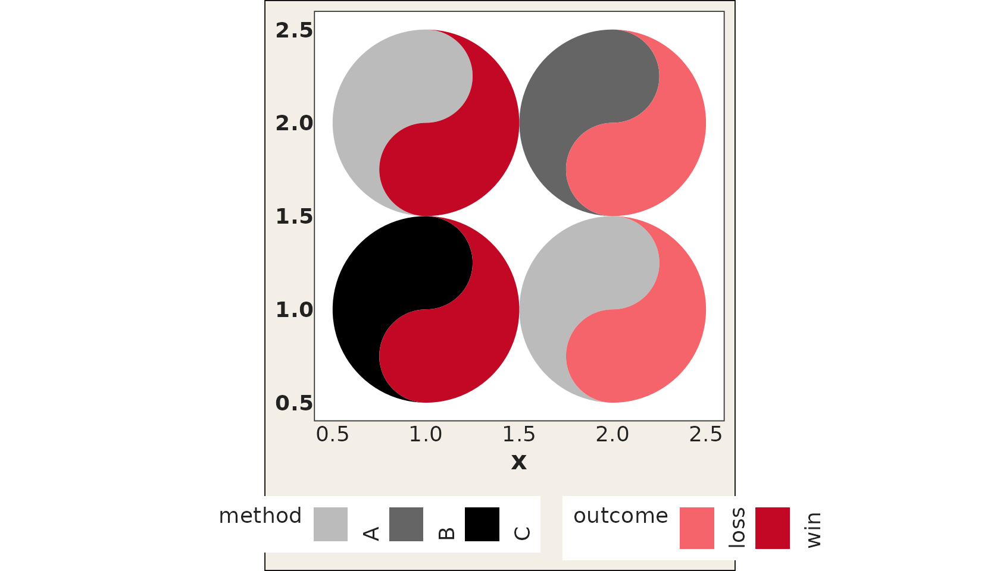
Geom parameter routing
All standard geom parameters (alpha,
colour, linewidth, linetype,
width, height, na.rm,
show.legend) are now properly accepted by
geom_taichi() and forwarded to the underlying fish geoms.
The deprecated size aesthetic has been replaced with
linewidth.
one_lwd <- data.frame(
x = c(1, 2, 1, 2),
y = c(2, 2, 1, 1),
yin = c(3, 5, 7, 9),
yang = c(9, 7, 5, 3)
)
ggplot(one_lwd, aes(x, y)) +
geom_taichi(yin = yin, yang = yang,
alpha = 0.7, linewidth = 1.5, colour = "#333333") +
coord_fixed() +
theme_taichi()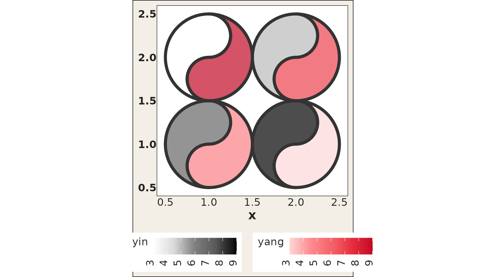
Acknowledgement
ggtaichi stands on the shoulders of the ggDoubleHeat
package, which pioneered the two-source “double” heat map through its
geom_heat_*() family and supplies the example data used
throughout this vignette. Please cite it alongside
ggtaichi:
Yu Y, Buskirk T (2025). ggDoubleHeat: A Heatmap-Like Visualization Tool. R package version 0.1.3. CRAN: https://CRAN.R-project.org/package=ggDoubleHeat, GitHub: https://github.com/PursuitOfDataScience/ggDoubleHeat